邦画ランキング
-
『カラオケ行こ！』
声変わりで悩む合唱部の中学生と、組のカラオケ大会で最下位になると恐怖の罰ゲームを受けるヤクザが、カラオケのレッスンを通じで奇妙な友情を育むコメディヒューマンドラマ。綾野剛演じる優しいヤクザがいい味を出していて、笑いあり涙ありの作品です。関西弁がとても自然でした。
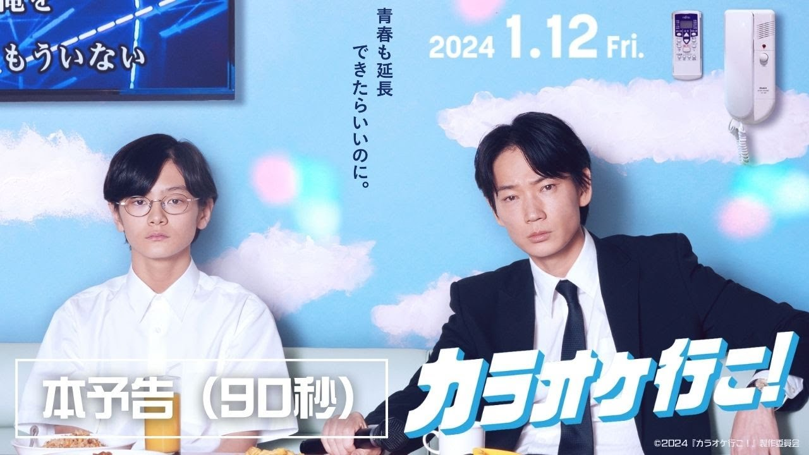
- 『PERFECT DAYS』
東京・渋谷の公共トイレ清掃員である平山の日常を描いた人間ドラマ。代わり映えしない中年男の地味な日々を描いているのですが、いつも通りの日常を丁寧に暮らし、清掃の仕事に自分なりのこだわりをもって取り組む平山の姿に変わらない日々の中に幸せを感じる素晴らしさを学びました。
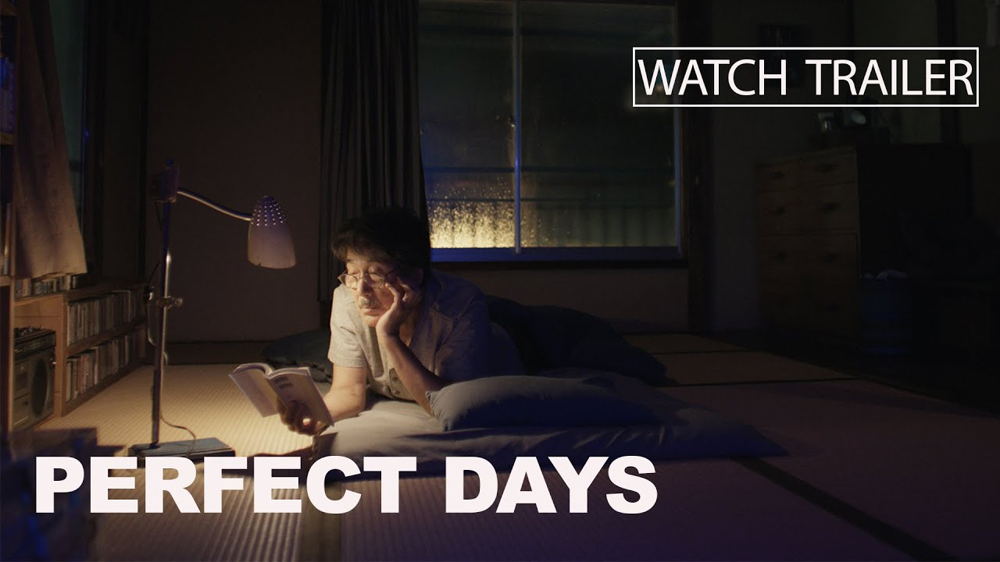
- 『かもめ食堂』
フィンランド・ヘルシンキの街角で日本人女性サチエが開いた小さな食堂を舞台に、3人の日本人女性と地元の人々が織りなす温かい日常を描いた物語。小林聡美、もたいまさこ、片桐はいりの演じる3人の女性のテンポ感のある会話やおしゃれな雰囲気が癖になる作品です。フィンランドのおしゃれで住人が気取らずに自由きままに暮らす様子が映える素敵な映像でした。
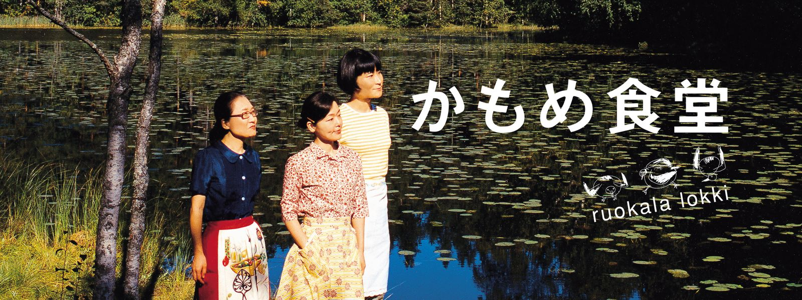
洋画ランキング
- 『グリーンブック』
1962年アメリカで、イタリア系男のトニー・リップがひょんなことから天才黒人ピアニストのドクター・シャーリーが南部で行う演奏ツアーに運転手兼ボディーガードとして雇われ、差別が残る南部えお旅しながら深い友情で結ばれていきます。実話を基にした作品で、人種を超える音楽を通した友情に感動しました。
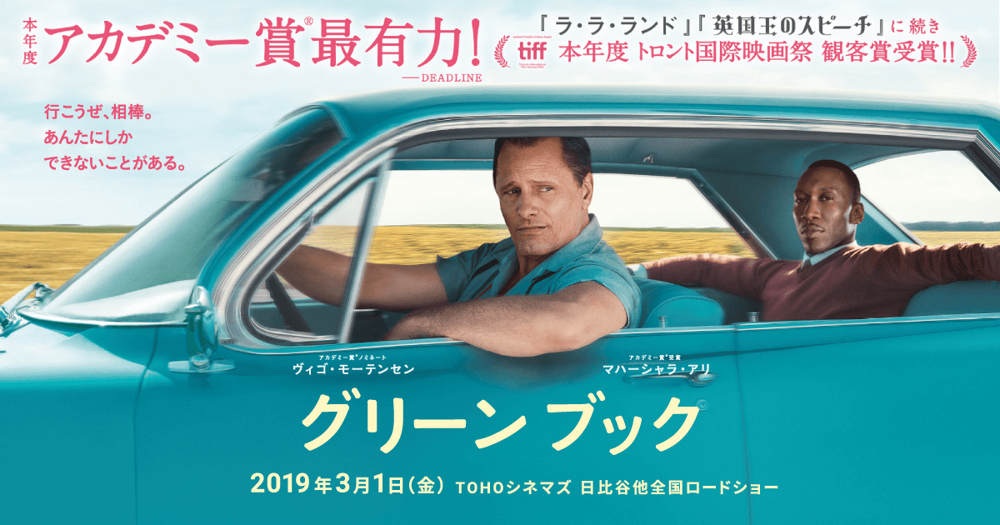
- 『アメリ』
パリを舞台に、空想好きで少し内気な女性アメリが周囲の人々に小さな幸せを届ける中で、自身の不器用な恋と向き合っていくハートウォーミングでファンタジックなロマンティックコメディ。アメリの奇想天外な行動やおしゃれで鮮やかな色使いに釘付けになりました。
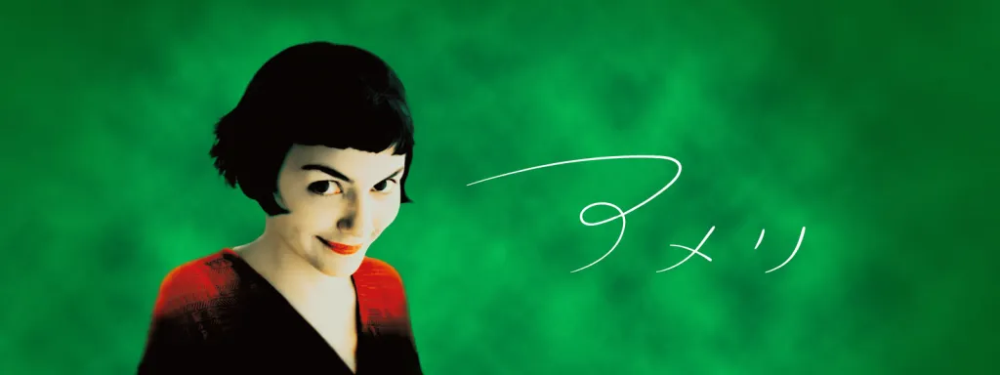
- 『哀れなるものたち』
自殺した身重の女性が天才外科医によって胎児の脳を移植されて蘇生し、未知なる世界への冒険を通じて時代の偏見から解放され、驚くべき成長と真の自由を獲得していく姿を描いた奇抜で壮大なヒューマンドラマ。人間がいちから成長していく姿から、学ぶことが人間にとっていかに重要で尊いものかを再認識しました。映像美がすごい作品でした。
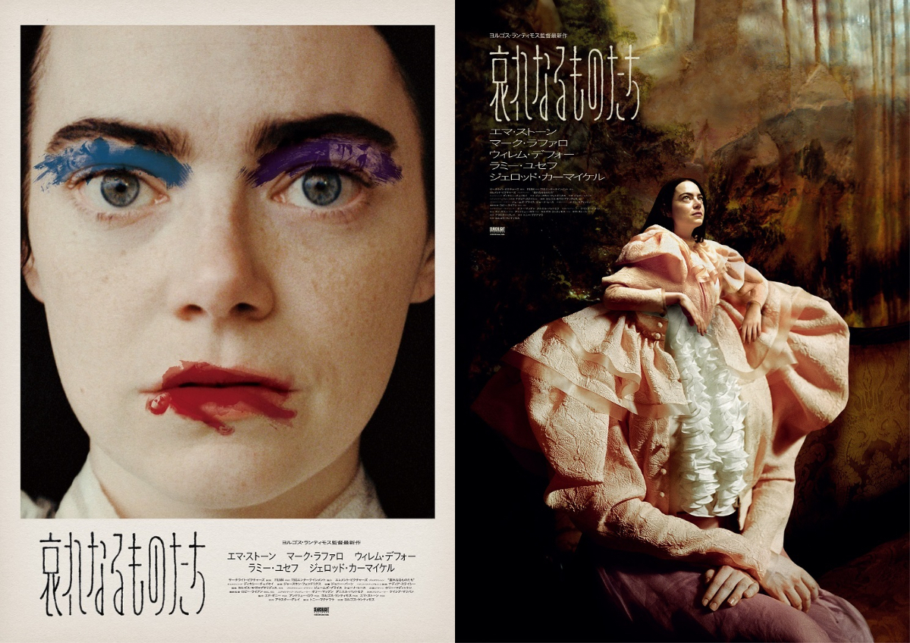
鬱映画ランキング
- 『あんのこと』
2020年に実際に起きた多重虐待や薬物依存に苦しむ少女がコロナ渦で追い詰められ、自殺してしまう事件を基にした人間ドラマ。かなり心に重く迫ってくる内容ですが、もしかしたら幸せな時間もあったのかもしれないと淡い希望を感じることができました。社会問題を真正面からしっかりと描いた作品でした。
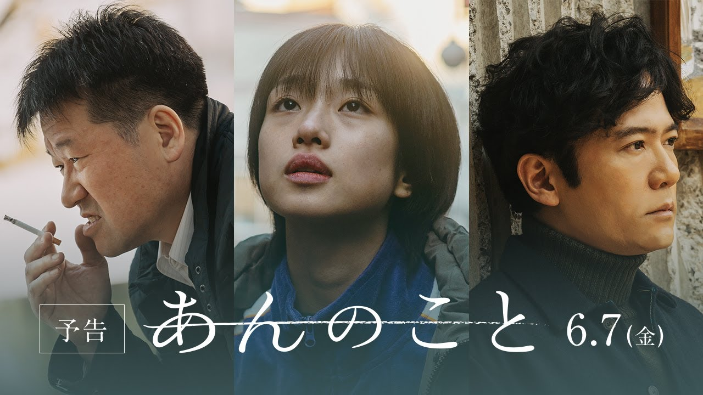
- 『でっちあげ～殺人教師と呼ばれた男』
小学校で起きた体罰・いじめ事件を担任の教師・薮下が行い「殺人教師」として実名報道され、日常と名誉を奪われるが実はすべて事実無根のでっちあげだったとして裁判を起こすという実際にあった事件を基にしたヒューマンドラマ。過熱する報道やネット社会の恐ろしさを感じました。
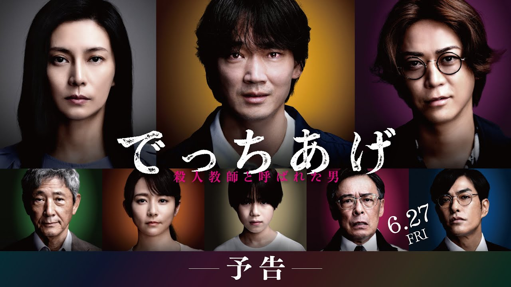
- 『さがす』
下町に暮らす男は懸賞金300万の指名手配犯を見たと娘に話した翌日に姿を消し、残された娘が父を探す中で驚愕の事実に辿り着くサスペンスドラマ。展開が読めない物語と佐藤二郎の演技が良かったです。
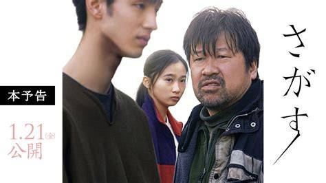
A24映画ランキング
2012年にニューヨークで設立された独立系の映画製作・配給会社。斬新で個性的な作品を次々と世に送り出している、私の大好きな映画製作会社です。
- 『ロブスター』
独身者は身柄を拘束されホテルに送られ、45日以内にパートナーを見つけなければ自らが選んだ動物に変えられ、森に放たれるという法律がある町で生きる独身の男が主人公。ありえない設定と暗めのストーリーですが、どんどん癖になって引き込まれる不思議な世界観です。
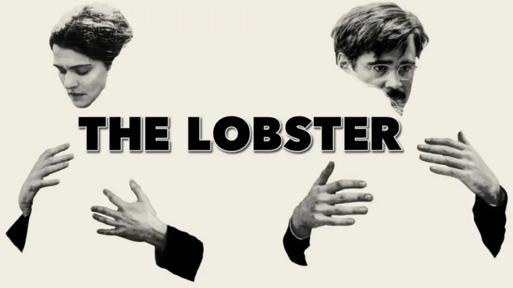
- 『Pearl パール』
孤立した家族の農家で厳しい母の監視のもと、病気の父の世話をする少女パールが自分の生活と対照的な映画の華やかな世界に憧れ、野望・誘惑・抑圧を残酷な形でぶつけていくホラーエンタテインメント。グロ描写もなぜかおしゃれに感じる絵作りで、最後の場面が頭から離れなくなる印象的な映画でした。
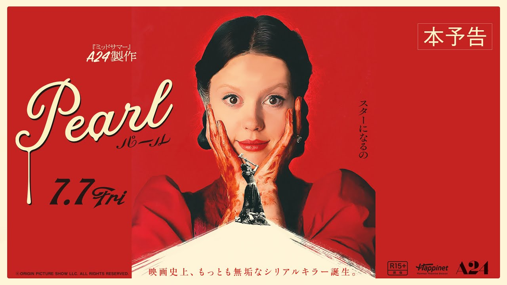
- 『ミッドサマー』
大学生たちが研究のためスウェーデンに行き、90年に1度開かれる夏至祭に参加し、恐怖の9日間の祝祭に巻き込まれるカルトホラー。見るに堪えない場面もありますが、それ以上に神秘的で美しいスウェーデンの風景がとても綺麗でした。
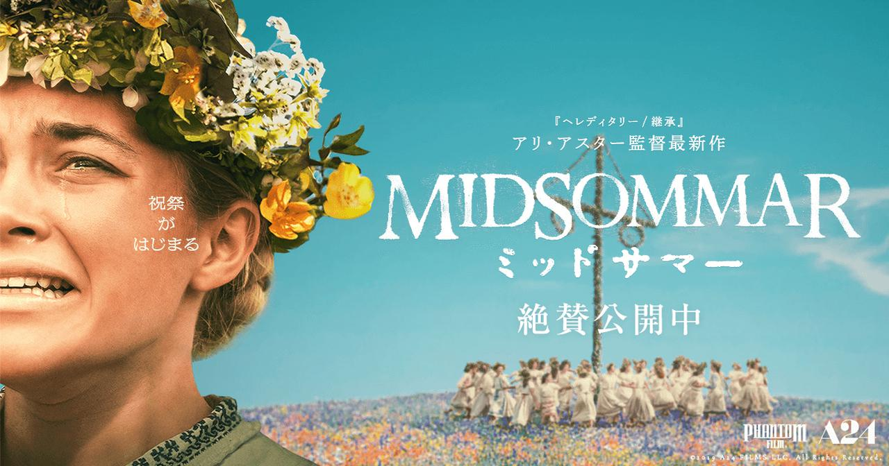
おすすめのアーティストについて知りたい方☟ My favorite Music